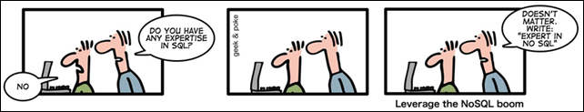

Week 7 Technical Blog - SQL vs. NoSQL

SQL or Relational Database Management Systems
Structured and Relational, SQL databases group their data together into logical tables. A person has a name, age, weight, height, hair color, etc. so in SQL we structure a person as a table in the database where there are columns for each characteristic of that person. You can then have a new person for each row in the person table.
SQL databases also rely heavily on having identity columns in a table so that each row in a table becomes unique. This also has the added advantage of being able to relate data in one table to data in another.
SQL databases rely on the SQL language(Structured Query Language) to query their data. This language is standard across almost all SQL type database software. This gives SQL databases a leg up as there is less of a learning curve when dealing with vendor specific software.
SQL queries can be very complex and allow a flexible way of grouping data together for consumption. This is something that NoSQL is not very good at.
SQL Databases Focus on the acronym ACID to ensure their data is valid. here is a break down of that acronym.
- Atomicity - Each transaction is atomic. If one part fails, the entire transaction fails.
- Consistency - Every transaction is subject to a consistent set of rules.
- Isolation - No transaction should interfere with another transaction.
- Durability - Once a transaction is committed, it remains committed.
Because of ACID, SQL databases are very consistent and their data can be trusted to be valid.
NoSQL
NoSQL stands for Not Only SQL and has no structure or schema. It is basically a large serialized object store. Comparisons can be made between it and json in JavaScript. There is a key and their is a value that is most often an object or document.
Because of this, NoSQL databases do not support complex queries. There is no joins, there is no grouping. If you wish to have this type of functionality with NoSQL then you must handle it in your own code.
NoSQL also has no standard query language like SQL. Each vendor of NoSQL like databases have their own proprietary approach to querying their data. This adds a learning curve to using NoSQl databases.
NoSQL does not use ACID and as such has none of the overhead pertaining to it. NoSQL, instead, User BASE which is the opposite of ACID and is broken down below.
- Basically available - guaranteed availability.
- Soft-state - The state of the system may change, even without a query.
- Eventually Consistent - The system will become consistent over time.
NoSQL scales horizontally(multiple servers) with ease. NoSQL databases can be hosted on multiple servers and any server can answer any query. Any write query can write to any database regardless of server and have that data propagate to the other servers. Servers communicate amongst themselves at their own pace. Because of this a server that answers a query may not have the latest data.
It is this paradigm that makes NoSQL data less than consistent and not always right but it is also why NoSQL databases have high availability. If one server goes down, the other servers are still available to handle queries.
There are 4 main types of NoSQL databases and they are:
-
Column Store
- Column data is saved together as opposed to row data
- Examples - Hadoop, Cassandra, Hypertable
-
Key-Value Store
- A key that refers to a payload
- Examples - Memcache, Azure Table Storage, Redis
-
Document/XML/Object Store
- Key(and possibly other indexes) point to a serialized object
- Examples - MongoDB, CouchDB, RavenDB
-
Graph Store
- Nodes are stored independently and relationship between nodes(edges) are stored with data
Conclusion
SQL or relational database management systems are great when your data has to be structured and valid. The ACID model for these types of database systems work well for data from business such as banking, finance, and safety systems. SQL databases are also great for complex queries. They scale vertically easily through hardware but poorly horizontally through multiple servers.
NoSQL databases are great for having high availability for data as they scale both horizontally and vertically. This also has a great benefit of increasing access speeds to data. With out the ACID model, data is not guaranteed to be valid. Querying one server may result in data that is not the most recent. If speed and availability is key then NoSQL may be your answer.
Resource